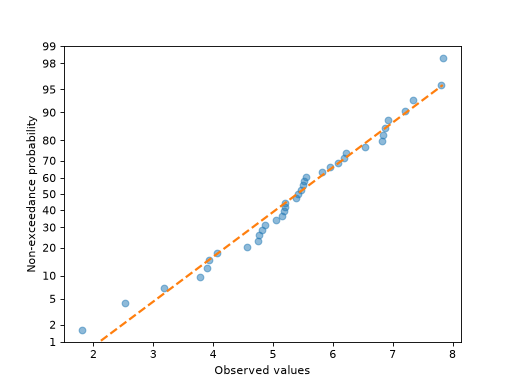
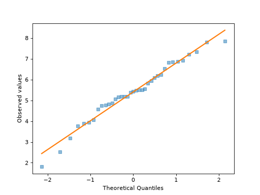

viz API Reference#
- class probscale.viz.PlotPosKwargs[source]#
Bases:
TypedDictKeyword arguments accepted by
plot_pos().
- probscale.viz.probplot(data: ArrayLike, ax: Axes | None = None, plottype: Literal['prob', 'pp', 'qq'] = 'prob', dist: DistLike | None = None, probax: Literal['x', 'y'] = 'x', problabel: str | None = None, datascale: str = 'linear', datalabel: str | None = None, bestfit: bool = False, return_best_fit_results: bool = False, estimate_ci: bool = False, ci_kws: dict[str, object] | None = None, pp_kws: PlotPosKwargs | None = None, scatter_kws: dict[str, Any] | None = None, line_kws: dict[str, Any] | None = None, **fgkwargs: str) Figure | tuple[Figure, ProbPlotResults][source]#
Probability, percentile, and quantile plots.
- Parameters:
- dataarray-like
1-dimensional data to be plotted
- axmatplotlib axes, optional
The Axes on which to plot. If one is not provided, a new Axes will be created.
- plottypestring (default = ‘prob’)
Type of plot to be created. Options are:
‘prob’: probability plot
‘pp’: percentile plot
‘qq’: quantile plot
- distscipy distribution, optional
A distribution-like object with
ppfandcdfmethods used to compute the scale’s tick positions and quantiles. If not specified, a minimal implementation of the standard normal distribution will be used.Note
This parameter is ignore when
plottype="pp".- probaxstring, optional (default = ‘x’)
The axis (‘x’ or ‘y’) that will serve as the probability (or quantile) axis.
- problabel, datalabelstring, optional
Axis labels for the probability/quantile and data axes respectively.
- datascalestring, optional (default = ‘linear’)
Scale for the other axis that is not the probability (or quantile) axis.
- bestfitbool, optional (default is False)
Specifies whether a best-fit line should be added to the plot.
- return_best_fit_resultsbool (default is False)
If True a dictionary of results of is returned along with the figure.
- estimate_cibool, optional (False)
Estimate and draw a confidence band around the best-fit line using a percentile bootstrap.
- ci_kwsdict, optional
Reserved for a future version. It is not currently used by
probplot.- pp_kwsdict, optional
Dictionary of keyword arguments passed directly to
viz.plot_poswhen computing the plotting positions.- scatter_kws, line_kwsdict, optional
Dictionary of keyword arguments passed directly to
ax.plotwhen drawing the scatter points and best-fit line, respectively.
- Returns:
- figmatplotlib.Figure
The figure on which the plot was drawn.
- resultsdict, optional
A dictionary of the best-fit results, returned only when
return_best_fit_resultsis True. Keys are:q : array of quantiles
x, y : arrays of data passed to the function
xhat, yhat : arrays of modeled data used to draw the best-fit line
res : dict of the best-fit coefficients, including slope, intercept, and, when
estimate_ciis True, the lower and upper confidence limits of the estimated y-values.
- Other Parameters:
- colorstring, optional
A directly-specified matplotlib color argument for both the data series and the best-fit line if drawn. This argument is made available for compatibility for the seaborn package and is not recommended for general use. Instead colors should be specified within
scatter_kwsandline_kws.Note
Users should not specify this parameter. It is intended to only be used by seaborn when operating within a
FacetGrid.- labelstring, optional
A directly-specified legend label for the data series. This argument is made available for compatibility for the seaborn package and is not recommended for general use. Instead the data series label should be specified within
scatter_kws.Note
Users should not specify this parameter. It is intended to only be used by seaborn when operating within a
FacetGrid.- markerstring, optional
A directly-specified matplotlib marker for the data series. This argument is made available for compatibility for the seaborn package and is not recommended for general use. Instead the data series marker should be specified within
scatter_kws.Note
Users should not specify this parameter. It is intended to only be used by seaborn when operating within a
FacetGrid.
See also
viz.plot_posviz.fit_linenumpy.polyfitscipy.stats.probplotscipy.stats.mstats.plotting_positions
Examples
Probability plot with the probabilities on the y-axis
>>> import numpy; numpy.random.seed(0) >>> from matplotlib import pyplot >>> from scipy import stats >>> from probscale.viz import probplot >>> data = numpy.random.normal(loc=5, scale=1.25, size=37) >>> fig = probplot(data, plottype='prob', probax='y', ... problabel='Non-exceedance probability', ... datalabel='Observed values', bestfit=True, ... line_kws=dict(linestyle='--', linewidth=2), ... scatter_kws=dict(marker='o', alpha=0.5))

Quantile plot with the quantiles on the x-axis
>>> fig = probplot(data, plottype='qq', probax='x', ... problabel='Theoretical Quantiles', ... datalabel='Observed values', bestfit=True, ... line_kws=dict(linestyle='-', linewidth=2), ... scatter_kws=dict(marker='s', alpha=0.5))

- probscale.viz.plot_pos(data: ArrayLike, postype: str | None = None, alpha: float | None = None, beta: float | None = None, exceedance: bool = False) tuple[NDArray[floating], NDArray[floating]][source]#
Compute the plotting positions for a dataset. Heavily borrows from
scipy.stats.mstats.plotting_positions.A plotting position is defined as:
(i-alpha)/(n+1-alpha-beta)where:iis the rank ordernis the size of the datasetalphaandbetaare parameters used to adjust the positions.
The values of
alphaandbetacan be explicitly set. Typical values can also be access via thepostypeparameter. Availablepostypevalues (alpha, beta) are:- “type 4” (alpha=0, beta=1)
Linear interpolation of the empirical CDF.
- “type 5” or “hazen” (alpha=0.5, beta=0.5)
Piecewise linear interpolation.
- “type 6” or “weibull” (alpha=0, beta=0)
Weibull plotting positions. Unbiased exceedance probability for all distributions. Recommended for hydrologic applications.
- “type 7” (alpha=1, beta=1)
The default values in R. Not recommended with probability scales as the min and max data points get plotting positions of 0 and 1, respectively, and therefore cannot be shown.
- “type 8” (alpha=1/3, beta=1/3)
Approximately median-unbiased.
- “type 9” or “blom” (alpha=0.375, beta=0.375)
Approximately unbiased positions if the data are normally distributed.
- “median” (alpha=0.3175, beta=0.3175)
Median exceedance probabilities for all distributions (used in
scipy.stats.probplot).- “apl” or “pwm” (alpha=0.35, beta=0.35)
Used with probability-weighted moments.
- “cunnane” (alpha=0.4, beta=0.4)
Nearly unbiased quantiles for normally distributed data. This is the default value.
- “gringorten” (alpha=0.44, beta=0.44)
Used for Gumbel distributions.
- Parameters:
- dataarray-like
The values whose plotting positions need to be computed.
- postypestring, optional (default: “cunnane”)
The name or alias of a pre-defined plotting position scheme, as listed above.
- alpha, betafloat, optional
Custom plotting position parameters to use when the options available through the
postypeparameter are insufficient.- exceedancebool, optional (default: False)
Toggles “exceedance” vs “non-exceedance” probability plots. By default, non-exceedance plots are drawn where the plot generally slopes from the lower left to the upper right, and show the probability that a new observation will be less than a given point. By contrast, exceedance plots show the probability that a new observation will be greater than a given point.
- Returns:
- posnumpy array
The computed plotting positions, sorted in ascending order. When
exceedanceis True, they are sorted in descending order.- data_sortednumpy array
The original data values, sorted in ascending order.
References
https://rdrr.io/cran/lmomco/man/pp.html http://astrostatistics.psu.edu/su07/R/html/stats/html/quantile.html http://docs.scipy.org/doc/scipy-0.17.0/reference/generated/scipy.stats.probplot.html http://docs.scipy.org/doc/scipy-0.17.0/reference/generated/scipy.stats.mstats.plotting_positions.html
- probscale.viz.fit_line(x: ArrayLike, y: ArrayLike, xhat: ArrayLike | None = None, fitprobs: Literal['x', 'y', 'both'] | None = None, fitlogs: Literal['x', 'y', 'both'] | None = None, dist: DistLike | None = None, estimate_ci: bool = False, niter: int = 10000, alpha: float = 0.05) tuple[NDArray[floating], NDArray[floating], FitResults][source]#
Fits a line to x-y data in various forms (linear, log, prob scales).
- Parameters:
- x, yarray-like
Independent and dependent data, respectively.
- xhatarray-like, optional
The values at which
yhatshould be estimated. If not provided, a copy ofxis used.- fitprobs, fitlogsstr, optional
Defines how data should be transformed. Valid values are ‘x’, ‘y’, ‘both’, or None. If using
fitprobs, variables should be expressed as a percentage, e.g., for a probability transform, data will be transformed withlambda x: dist.ppf(x / 100.). For a log transform,lambda x: numpy.log(x). Take care to not pass the same value to bothfitlogsandfitprobsas both transforms will be applied.- distdistribution, optional
A fully-spec’d scipy.stats distribution-like object such that
dist.ppfanddist.cdfcan be called. If not provided, defaults to a minimal implementation ofscipy.stats.norm.- estimate_cibool, optional (False)
Estimate a confidence band around the best-fit line using a percentile bootstrap.
- niterint, optional (default = 10000)
Number of bootstrap iterations if
estimate_ciis provided.- alphafloat, optional (default = 0.05)
The confidence level of the bootstrap estimate.
- Returns:
- xhat, yhatnumpy arrays
Linear model estimates of
xandy.- resultsdict
Dictionary of linear fit results. Keys include:
slope
intercept
yhat_lo, yhat_hi: lower and upper confidence limits of the estimated y-values (None when
estimate_ciis False).